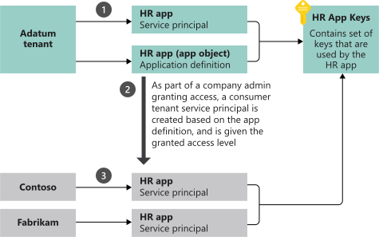

Application object
An Azure AD application is defined by its one and only application object, which resides in the Azure AD tenant where the application was registered (known as the application’s "home" tenant). An application object is used as a template or blueprint to create one or more service principal objects. A service principal is created in every tenant where the application is used. Similar to a class in object-oriented programming, the application object has some static properties that are applied to all the created service principals (or application instances).
The application object describes three aspects of an application:
-
How the service can issue tokens in order to access the application
-
The resources that the application might need to access
-
The actions that the application can take
Service principal object
To access resources that are secured by an Azure AD tenant, the entity that requires access must be represented by a security principal. This requirement is true for both users (user principal) and applications (service principal). The security principal defines the access policy and permissions for the user/application in the Azure AD tenant. This enables core features such as authentication of the user/application during sign-in, and authorization during resource access.
There are three types of service principal:
-
Application - The type of service principal is the local representation, or application instance, of a global application object in a single tenant or directory. In this case, a service principal is a concrete instance created from the application object and inherits certain properties from that application object. A service principal is created in each tenant where the application is used and references the globally unique app object. The service principal object defines what the app can actually do in the specific tenant, who can access the app, and what resources the app can access.
When an application is given permission to access resources in a tenant (upon registration or consent), a service principal object is created. When you register an application using the Azure portal, a service principal is created automatically. You can also create service principal objects in a tenant using Azure PowerShell, Azure CLI, Microsoft Graph, and other tools.
-
Managed identity - This type of service principal is used to represent a managed identity. Managed identities eliminate the need for developers to manage credentials. Managed identities provide an identity for applications to use when connecting to resources that support Azure AD authentication. When a managed identity is enabled, a service principal representing that managed identity is created in your tenant. Service principals representing managed identities can be granted access and permissions, but can’t be updated or modified directly.
-
Legacy - This type of service principal represents a legacy app, which is an app created before app registrations were introduced or an app created through legacy experiences. A legacy service principal can have credentials, service principal names, reply URLs, and other properties that an authorized user can edit, but doesn’t have an associated app registration. The service principal can only be used in the tenant where it was created.
Relationship between application objects and service principals
The application object is the global representation of your application for use across all tenants, and the service principal is the local representation for use in a specific tenant. The application object serves as the template from which common and default properties are derived for use in creating corresponding service principal objects.
An application object has:
-
A one-to-one relationship with the software application, and
-
A one-to-many relationship with its corresponding service principal object(s)
A service principal must be created in each tenant where the application is used, enabling it to establish an identity for sign-in and/or access to resources being secured by the tenant. A single-tenant application has only one service principal (in its home tenant), created and consented for use during application registration. A multi-tenant application also has a service principal created in each tenant where a user from that tenant has consented to its use.
